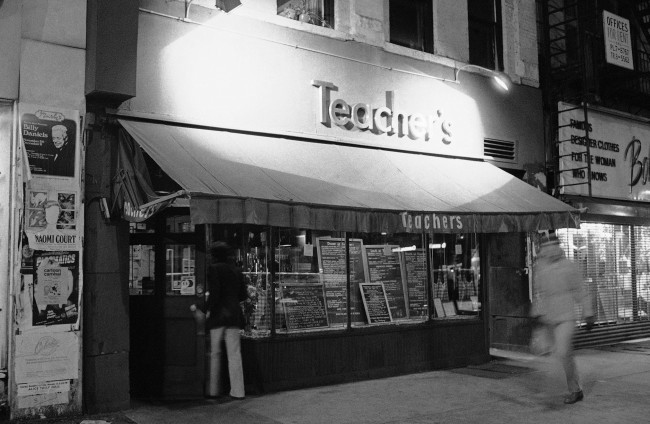
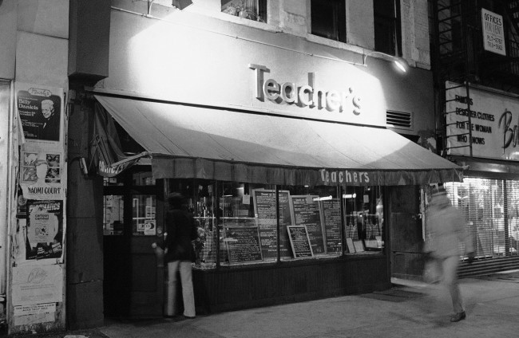

Teacher’s Restaurant, upper west side, 1980. Teacher’s was kind of a hip bistro, before hip bistros were hip.

Teacher’s Restaurant, upper west side, 1980. Teacher’s was kind of a hip bistro, before hip bistros were hip.

A cache of [Kenneth] Siegel’s photographs from the ’70s, which included these images of the the “S.N.L.” cast and the others taken in Times Square, were given to the New-York Historical Society in 2008. Tom Schiller, who produced short films and wrote for “S.N.L.,” says that after each week’s show was finished, everyone headed downtown to One Fifth Avenue (now Otto) for an afterparty — not, usually, to Greek joints. “It’s rare to see them all lined up like that,” Schiller says. “It’s weird and wonderful.” (source)
1979, New York Subway

Young Man on the Train, Long Island City, NY, 1985 © Robert Herman

Photo by Kenneth Siegel
My guess, 1970s

Broadway, 1965

E. 2nd st., 1967
James Jowers
(George Eastman House)